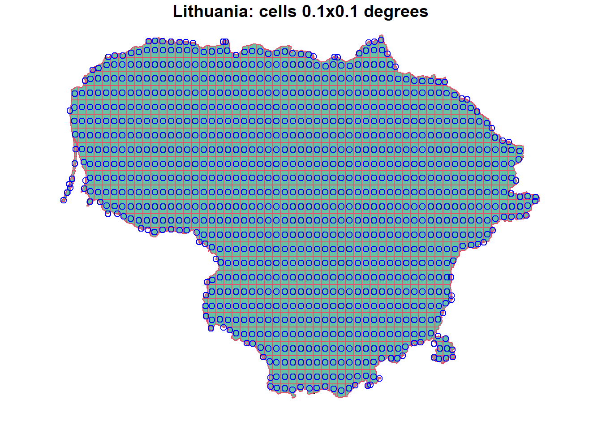
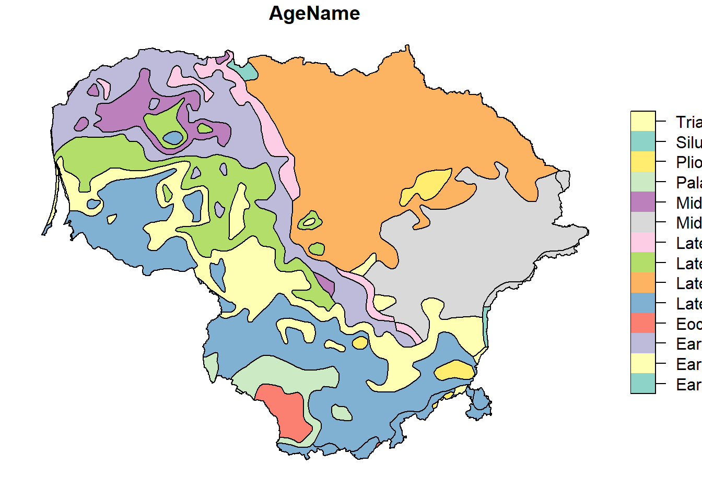
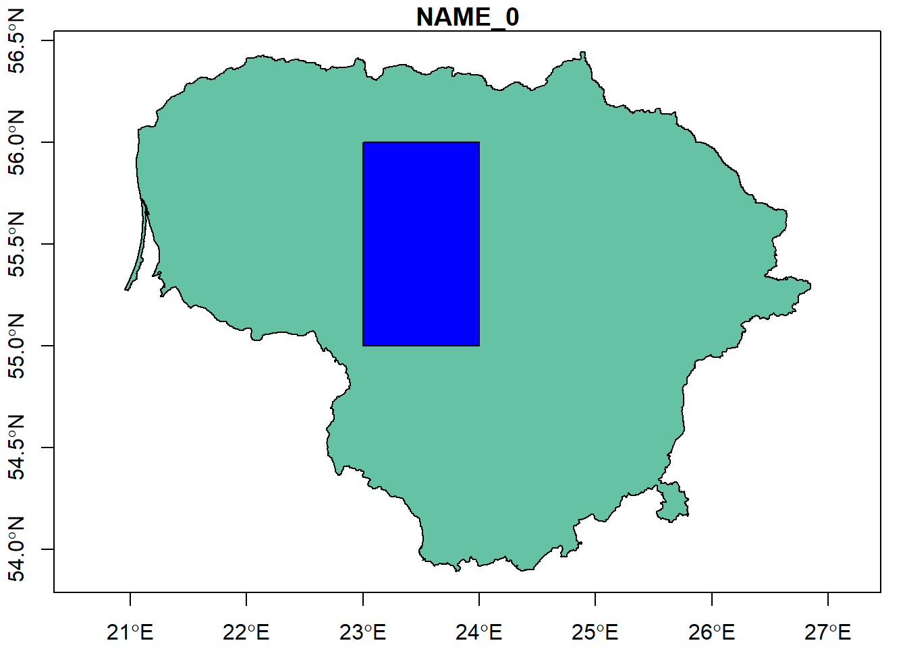

Chapter 3 Indoor radon
Create a simulated dataset of indoor radon concentration with 3/4 geogenic factors (e.g. bedrock geology, aquifers - karst/No-karst, uranium in topsoil) and as spatial autocorrelation of the residuals, …
3.1 Administrative divisions
I got Lithuania from www.gadm.org, but you may download the administrative areas of other countries
Country <- readRDS(url("https://biogeo.ucdavis.edu/data/gadm3.6/Rsf/gadm36_LTU_0_sf.rds"))
County <- readRDS(url("https://biogeo.ucdavis.edu/data/gadm3.6/Rsf/gadm36_LTU_1_sf.rds"))
Muni <- readRDS(url("https://biogeo.ucdavis.edu/data/gadm3.6/Rsf/gadm36_LTU_2_sf.rds"))3.2 Grids 10 x 10 km
Download from https://www.eea.europa.eu/data-and-maps/data/eea-reference-grids-2
EEA_Ref_grid_URL <- "https://www.eea.europa.eu/data-and-maps/data/eea-reference-grids-2/gis-files/lithuania-shapefile/at_download/file.zip"
temp <- tempfile()
temp2 <- tempfile()
download.file(EEA_Ref_grid_URL, temp)
unzip(zipfile = temp, exdir = temp2)
Grids_10km <- read_sf(file.path(temp2, "lt_10km.shp"))
unlink(c(temp, temp2))
Grids_10km$Id <- seq(1, length(Grids_10km$CELLCODE), 1) # Add new column with "Id"
Grids_10km$Id <- as.factor(Grids_10km$Id) # Stored as a vector of integer values
st_crs(Grids_10km) # Coordinate Reference System# Coordinate Reference System:
# User input: ETRS89 / ETRS-LAEA
# wkt:
# PROJCRS["ETRS89 / ETRS-LAEA",
# BASEGEOGCRS["ETRS89",
# DATUM["European Terrestrial Reference System 1989",
# ELLIPSOID["GRS 1980",6378137,298.257222101,
# LENGTHUNIT["metre",1]]],
# PRIMEM["Greenwich",0,
# ANGLEUNIT["degree",0.0174532925199433]],
# ID["EPSG",4258]],
# CONVERSION["unnamed",
# METHOD["Lambert Azimuthal Equal Area",
# ID["EPSG",9820]],
# PARAMETER["Latitude of natural origin",52,
# ANGLEUNIT["degree",0.0174532925199433],
# ID["EPSG",8801]],
# PARAMETER["Longitude of natural origin",10,
# ANGLEUNIT["degree",0.0174532925199433],
# ID["EPSG",8802]],
# PARAMETER["False easting",4321000,
# LENGTHUNIT["metre",1],
# ID["EPSG",8806]],
# PARAMETER["False northing",3210000,
# LENGTHUNIT["metre",1],
# ID["EPSG",8807]]],
# CS[Cartesian,2],
# AXIS["x",east,
# ORDER[1],
# LENGTHUNIT["metre",1]],
# AXIS["y",north,
# ORDER[2],
# LENGTHUNIT["metre",1]],
# ID["EPSG",3035]] st_crs(Country) # Coordinate Reference System# Coordinate Reference System:
# User input: EPSG:4326
# wkt:
# GEOGCRS["WGS 84",
# DATUM["World Geodetic System 1984",
# ELLIPSOID["WGS 84",6378137,298.257223563,
# LENGTHUNIT["metre",1]]],
# PRIMEM["Greenwich",0,
# ANGLEUNIT["degree",0.0174532925199433]],
# CS[ellipsoidal,2],
# AXIS["geodetic latitude (Lat)",north,
# ORDER[1],
# ANGLEUNIT["degree",0.0174532925199433]],
# AXIS["geodetic longitude (Lon)",east,
# ORDER[2],
# ANGLEUNIT["degree",0.0174532925199433]],
# USAGE[
# SCOPE["Horizontal component of 3D system."],
# AREA["World."],
# BBOX[-90,-180,90,180]],
# ID["EPSG",4326]] Grids_10km <- Grids_10km %>% st_transform(4326) # Trandform coordinate system (from EPSG: 3035 to EPSG: 4326)
st_crs(Grids_10km) # Coordinate Reference System # Coordinate Reference System:
# User input: EPSG:4326
# wkt:
# GEOGCRS["WGS 84",
# DATUM["World Geodetic System 1984",
# ELLIPSOID["WGS 84",6378137,298.257223563,
# LENGTHUNIT["metre",1]]],
# PRIMEM["Greenwich",0,
# ANGLEUNIT["degree",0.0174532925199433]],
# CS[ellipsoidal,2],
# AXIS["geodetic latitude (Lat)",north,
# ORDER[1],
# ANGLEUNIT["degree",0.0174532925199433]],
# AXIS["geodetic longitude (Lon)",east,
# ORDER[2],
# ANGLEUNIT["degree",0.0174532925199433]],
# USAGE[
# SCOPE["Horizontal component of 3D system."],
# AREA["World."],
# BBOX[-90,-180,90,180]],
# ID["EPSG",4326]] st_crs(Country) # Coordinate Reference System # Coordinate Reference System:
# User input: EPSG:4326
# wkt:
# GEOGCRS["WGS 84",
# DATUM["World Geodetic System 1984",
# ELLIPSOID["WGS 84",6378137,298.257223563,
# LENGTHUNIT["metre",1]]],
# PRIMEM["Greenwich",0,
# ANGLEUNIT["degree",0.0174532925199433]],
# CS[ellipsoidal,2],
# AXIS["geodetic latitude (Lat)",north,
# ORDER[1],
# ANGLEUNIT["degree",0.0174532925199433]],
# AXIS["geodetic longitude (Lon)",east,
# ORDER[2],
# ANGLEUNIT["degree",0.0174532925199433]],
# USAGE[
# SCOPE["Horizontal component of 3D system."],
# AREA["World."],
# BBOX[-90,-180,90,180]],
# ID["EPSG",4326]] Grids_10km <- st_intersection(Grids_10km, Country) # Grids in the countryplot(Grids_10km["Id"])
3.3 Make our own grid (e.g. 0.1 x 0.1 degrees)
# Make regular grids (0.1 x 0.1)
Grids <- Country %>%
st_make_grid(cellsize = 0.1, what = "polygons") %>%
st_sf() %>%
st_intersection(Country) %>%
# Name grids as "g001", "g002"
mutate(ID = paste0("g", stringr::str_pad(seq(1, nrow(.), 1), 3, pad = "0")))
# Centroid of the grid
SPDF <- st_centroid(Grids) plot(Country["NAME_0"], reset = F, main = "Lithuania: cells 0.1x0.1 degrees")
plot(Grids, add = T, border = 2)
plot(SPDF, add = T, col = "blue")
3.4 Geology 1:5M
IGME5000_url <- "https://download.bgr.de/bgr/Geologie/IGME5000/shp/IGME5000.zip"
temp <- tempfile()
temp2 <- tempfile()
download.file(IGME5000_url, temp)
unzip(zipfile = temp, exdir = temp2)
IGME5000 <- read_sf(file.path(temp2, "europe/data/IGME5000_europeEPSG3034shp_geology_poly_v01.shp"))
unlink(c(temp, temp2))
st_crs(IGME5000)# Coordinate Reference System:
# User input: ETRS89-extended / LCC Europe
# wkt:
# PROJCRS["ETRS89-extended / LCC Europe",
# BASEGEOGCRS["ETRS89",
# DATUM["European Terrestrial Reference System 1989",
# ELLIPSOID["GRS 1980",6378137,298.257222101,
# LENGTHUNIT["metre",1]]],
# PRIMEM["Greenwich",0,
# ANGLEUNIT["degree",0.0174532925199433]],
# ID["EPSG",4258]],
# CONVERSION["Europe Conformal 2001",
# METHOD["Lambert Conic Conformal (2SP)",
# ID["EPSG",9802]],
# PARAMETER["Latitude of false origin",52,
# ANGLEUNIT["degree",0.0174532925199433],
# ID["EPSG",8821]],
# PARAMETER["Longitude of false origin",10,
# ANGLEUNIT["degree",0.0174532925199433],
# ID["EPSG",8822]],
# PARAMETER["Latitude of 1st standard parallel",35,
# ANGLEUNIT["degree",0.0174532925199433],
# ID["EPSG",8823]],
# PARAMETER["Latitude of 2nd standard parallel",65,
# ANGLEUNIT["degree",0.0174532925199433],
# ID["EPSG",8824]],
# PARAMETER["Easting at false origin",4000000,
# LENGTHUNIT["metre",1],
# ID["EPSG",8826]],
# PARAMETER["Northing at false origin",2800000,
# LENGTHUNIT["metre",1],
# ID["EPSG",8827]]],
# CS[Cartesian,2],
# AXIS["northing (N)",north,
# ORDER[1],
# LENGTHUNIT["metre",1]],
# AXIS["easting (E)",east,
# ORDER[2],
# LENGTHUNIT["metre",1]],
# USAGE[
# SCOPE["Conformal mapping at scales of 1:500,000 and smaller."],
# AREA["Europe - European Union (EU) countries and candidates. Europe - onshore and offshore: Albania; Andorra; Austria; Belgium; Bosnia and Herzegovina; Bulgaria; Croatia; Cyprus; Czechia; Denmark; Estonia; Faroe Islands; Finland; France; Germany; Gibraltar; Greece; Hungary; Iceland; Ireland; Italy; Kosovo; Latvia; Liechtenstein; Lithuania; Luxembourg; Malta; Monaco; Montenegro; Netherlands; North Macedonia; Norway including Svalbard and Jan Mayen; Poland; Portugal including Madeira and Azores; Romania; San Marino; Serbia; Slovakia; Slovenia; Spain including Canary Islands; Sweden; Switzerland; Turkey; United Kingdom (UK) including Channel Islands and Isle of Man; Vatican City State."],
# BBOX[24.6,-35.58,84.17,44.83]],
# ID["EPSG",3034]] st_crs(Country)# Coordinate Reference System:
# User input: EPSG:4326
# wkt:
# GEOGCRS["WGS 84",
# DATUM["World Geodetic System 1984",
# ELLIPSOID["WGS 84",6378137,298.257223563,
# LENGTHUNIT["metre",1]]],
# PRIMEM["Greenwich",0,
# ANGLEUNIT["degree",0.0174532925199433]],
# CS[ellipsoidal,2],
# AXIS["geodetic latitude (Lat)",north,
# ORDER[1],
# ANGLEUNIT["degree",0.0174532925199433]],
# AXIS["geodetic longitude (Lon)",east,
# ORDER[2],
# ANGLEUNIT["degree",0.0174532925199433]],
# USAGE[
# SCOPE["Horizontal component of 3D system."],
# AREA["World."],
# BBOX[-90,-180,90,180]],
# ID["EPSG",4326]] IGME5000 <- IGME5000 %>%
st_transform(4326) %>%
st_intersection(Country)
st_crs(IGME5000)# Coordinate Reference System:
# User input: EPSG:4326
# wkt:
# GEOGCRS["WGS 84",
# DATUM["World Geodetic System 1984",
# ELLIPSOID["WGS 84",6378137,298.257223563,
# LENGTHUNIT["metre",1]]],
# PRIMEM["Greenwich",0,
# ANGLEUNIT["degree",0.0174532925199433]],
# CS[ellipsoidal,2],
# AXIS["geodetic latitude (Lat)",north,
# ORDER[1],
# ANGLEUNIT["degree",0.0174532925199433]],
# AXIS["geodetic longitude (Lon)",east,
# ORDER[2],
# ANGLEUNIT["degree",0.0174532925199433]],
# USAGE[
# SCOPE["Horizontal component of 3D system."],
# AREA["World."],
# BBOX[-90,-180,90,180]],
# ID["EPSG",4326]] plot(IGME5000["AgeName"])
3.5 Study area
I will focus the data analysis in a region of of 1x1 degrees
# First: build a rectangle
Area <- matrix(NA, ncol = 2, nrow = 4)
Area <- as.data.frame(Area)
names(Area) <- c("X","Y")
Area[1,] <- c(23,55)
Area[2,] <- c(23,56)
Area[3,] <- c(24,56)
Area[4,] <- c(24,55)
coordinates(Area) <- ~X+Y
Area <- rbind(Area,Area[1,])
Area <- Polygons(list(Polygon(Area)),ID="Area")
Area <- SpatialPolygons(list(Area))
Area <- as(Area, "sf")
st_crs(Area) <- st_crs(Country)
plot(Country["NAME_0"], axes = TRUE, reset = F)
plot(Area, col = "blue", add = T)
# Second: intersect Area with all the data
Country <- st_intersection(Country, Area)
County <- st_intersection(County, Area)
Muni <- st_intersection(Muni, Area)
Grids_10km <- st_intersection(Grids_10km, Area)
IGME5000 <- st_intersection(IGME5000, Area)3.6 Simulate indoor radon data
Please be aware that I am using SIMULATED data, and therefore data interpretation is NOT real. Any coincidence with a real case (i.e. Lithuania) is casual. Data are only useful for training purpose, you may need to read your own data for data interpretation.
set.seed(1) # Make the simulation reproducible
# Radom points in the study area
N <- 1000
X <- runif(N,23.0001,23.9999)
Y <- runif(N,55.0001,55.9999)
points <- cbind(X,Y)
points <- as.data.frame(points)
coordinates(points) <- ~X+Y
proj4string(points) <- CRS("EPSG:4326")
points <- as(points, "sf")
points <- st_intersection(points, Country)
points <- as_Spatial(points)
# define the gstat object (spatial model)
library(gstat)
g_dummy <- gstat(formula = z ~ 1,
locations = ~ X + Y,
dummy = T,
beta = 3,
model = vgm(psill = 1.5,
model = "Exp",
range = 10,
nugget = 0.5),
nmax = 100)
# Simulations based on the gstat object
points <- predict(g_dummy, newdata = points, nsim = 1)# [using unconditional Gaussian simulation] points$Rn <- exp(points$sim1)
# Final result: Simulated indoor radon dataset (InRn) in Bq m-3
InRn <- points[,"Rn"]
# Detection Limit (DL): 10 Bq m-3 (replaced by half of the Limit of Detection)
InRn[InRn$Rn <= 10,] <- 5
InRn <- as(InRn, "sf") %>%
st_transform(crs = "EPSG:4326")